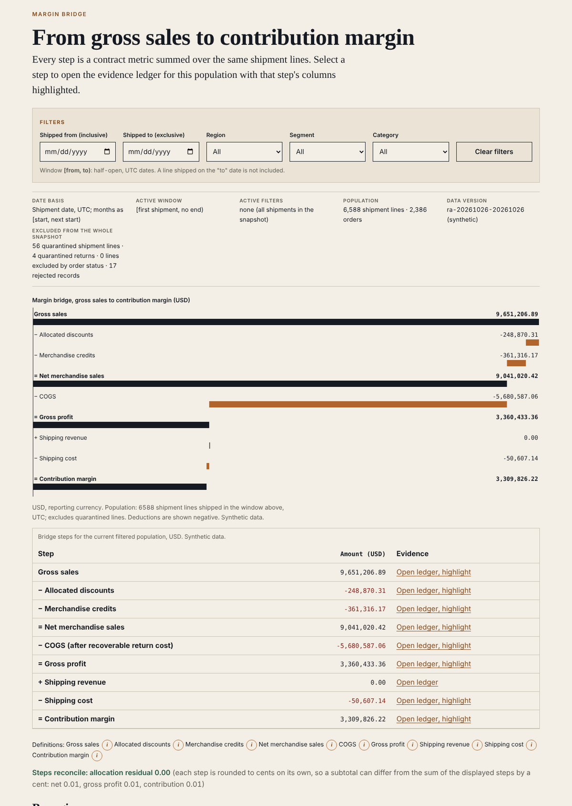
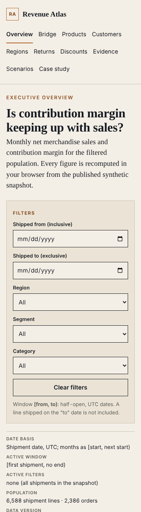

[ Work ]Dashboard · Analytics engineering · FastAPI · ReactCase 220 / 236
Which Customer, Product, Region or Discount Policy Explains a Falling Contribution Margin?
Revenue Atlas: a margin bridge that reconciles to a shipment-line ledger to the cent. A pure-Python contract (historical cost, dated FX, freight allocated once per line with a zero residual, credits on returns) verified against a hand-calculated fixture, an independent SQL recomputation on PostgreSQL in GitHub Actions, and the same contract re-implemented in TypeScript for a static demo. Synthetic data; project 01 of the Business Data Lab.
What needed answering
Month-end margin reviews argue from spreadsheets that use different populations: bookings in one, shipments in another, credits netted in the month of the original sale, and order freight joined to line rows so that it is counted once per line. The review cannot say which customer, product, region or discount policy explains a decline, because the totals do not reconcile to anything.
Revenue Atlas fixes the definitions first. Every metric is a sum over shipment lines in a half-open UTC window; every dollar of discount, cost, credit and freight belongs to exactly one line; and the bridge from gross sales to contribution margin must reconcile to the ledger to the cent before anyone draws a conclusion.
The build
Three implementations of one contract, checked against each other and against a hand calculation.
- The contract (
docs/contracts.md): shipment-line grain, shipped-at time basis, half-open windows, dated FX with quarantine for a missing rate, exactly one cost version per line, discounts and freight allocated by largest remainder with a deterministic tie-break, credits on returns at the original cost version. - A known-answer fixture written before any code: two shipped lines, net 225, COGS 140, gross profit 85, freight 12 and 3, contribution 70; one returned unit credits 90 and reverses 60, so contribution becomes 40. A standard-library script reproduces it from the source records independently of the application.
- The Python domain and the FastAPI commands: ingest with raw rows preserved and malformed currencies rejected, cost resolution, partial returns that cannot exceed the remaining quantity, freight allocation guarded by a primary key so a many-to-many join cannot allocate twice; idempotency keys, optimistic versions, 409 and 422 contracts; migrations and an independent SQL recomputation on PostgreSQL.
- The static site: the same contract in TypeScript on BigInt fixed-point decimals, an executive overview, the margin bridge with drill-through to the transaction ledger, filters in the URL, CSV export with the contract version, dataset hash and filters in its header, and a case study.
Step by step
- Step 01
Write the answer before the code
The fixture is the oracle. Its expected values are hand-written literals, and the reference script that recomputes them imports nothing from the application. The Python domain, the SQL recomputation and the TypeScript domain are each tested against that file, never only against each other.
- Step 02
Allocate once, reconcile to zero
Freight is allocated per shipment over its lines by gross-sales weight: each share is truncated to cents and the leftover cents go to the largest fractional remainders, lowest line id first. The allocation table's primary key is the shipment line, so a second allocation fails with a 409 instead of doubling the cost. The bridge prints the residual; a non-zero residual blocks publication.
def largest_remainder(total, weights): shares = {k: floor_cents(total * w / sum_w) for k, w in weights} left = cents(total) - sum(shares.values()) for k, _ in sorted(weights, key=remainder_then_key)[:left_cents]: shares[k] += Decimal("0.01") return shares - Step 03
Quarantine, never zero
A line with no exchange rate on its shipment date, or with zero or two cost versions, leaves the population with a reason code and is counted on every screen. It is never valued at zero or at a guessed rate, because a silent zero is how a decline gets explained by the wrong cause.
- Step 04
Two modes, disclosed
Mode A is the backend run on a GitHub-hosted runner with a transient PostgreSQL: 79 tests including the adversarial cases (double allocation, overlapping cost versions, a return larger than what remains, a reversed credit sign, a cancelled order). Mode B is the public site: the same contract in the browser over a published snapshot. The site says so next to every control that only simulates.
- Step 05
Look at it at four widths
Playwright walks the journey (direct entry, reload on a nested path, bridge to ledger drill, filter, clear, export) and photographs five routes at 360, 768, 1280 and 1920 px and the bridge at 200 % zoom, asserting no horizontal overflow and no console errors. On the golden dataset the browser bridge shows 250, −25, −90, 135, −80, 55, −15, 40.
Results
The margin bridge on the synthetic snapshot (6,588 eligible shipment lines, 56 quarantined with reasons):

The overview on a phone, with the designed cost change at 2026-01 marked and attributed to the generator:

Checks. The reference script reproduces the fixture exactly; 128 Python tests pass against PostgreSQL 16 on a GitHub-hosted runner; 175 TypeScript golden checks, 60 review-regression checks and 25 Playwright tests pass; the TypeScript pipeline over the full snapshot matches the Python pipeline on every metric, rejected and quarantined record. Evidence: the CI runs and the verification ledger in the source tree.
Found by review, then fixed. An independent reviewer tried to disprove the bridge and found seven real issues: credits windowed by shipment date instead of credit date, an over-shipped line accepted and its discount over-allocated, persisted discount splits drifting across partial shipments, unallocated freight missing from grouped sums, freight spread over quarantined lines, a cross-order shipment line, and a signed-zero credit. Each now has a regression test in Python and TypeScript. One known limitation stays: converted (non-USD) grouped sums can differ from the total by cents.
Not built yet. Scenario commands and the six later screens (products, customers, regions, returns, discounts, scenarios) are stubs; the analyst workbook is LibreOffice-recalculated (not Excel); the Power BI package is a documented star schema and DAX pack, not a .pbix.
Next
- Build the remaining screens and the scenario commands on a copy of the immutable baseline.
- Bind idempotency replays to the actor and hash payloads by value.
- Verify the workbook in Excel and build the Power BI model from the published snapshot.
- Projects 02 to 10 of the lab follow the same gates.